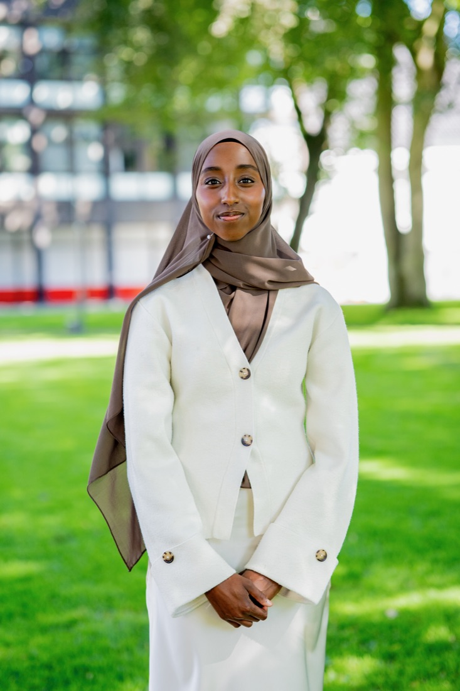
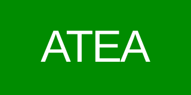
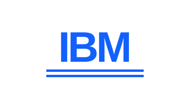
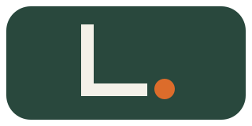
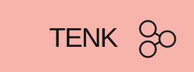
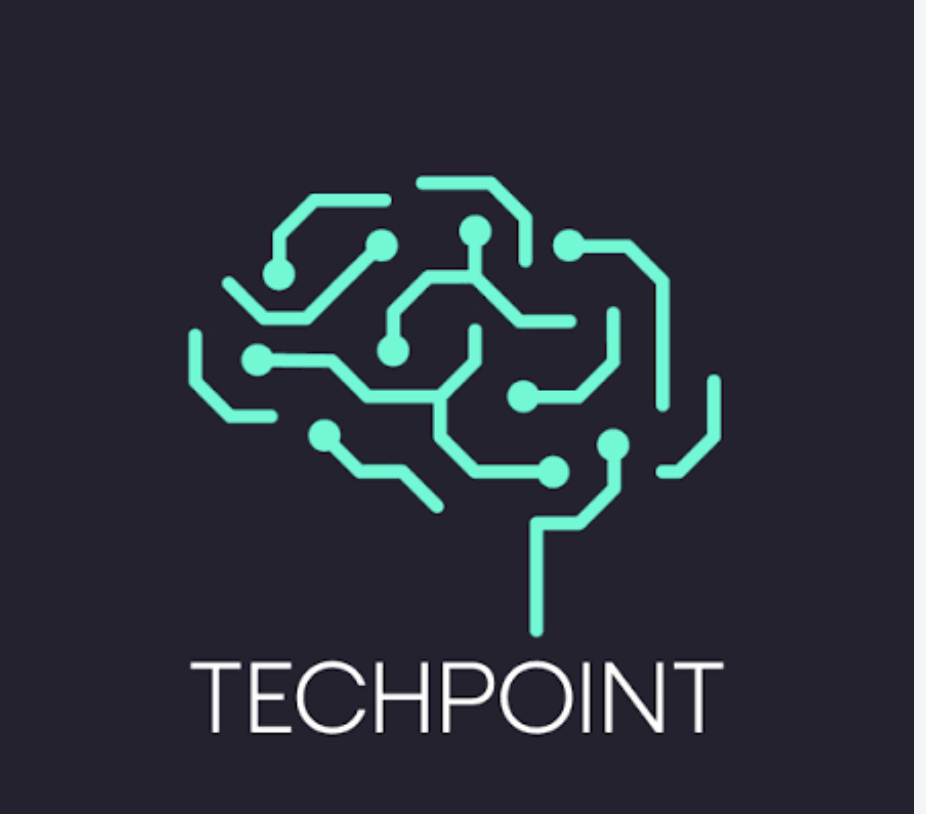
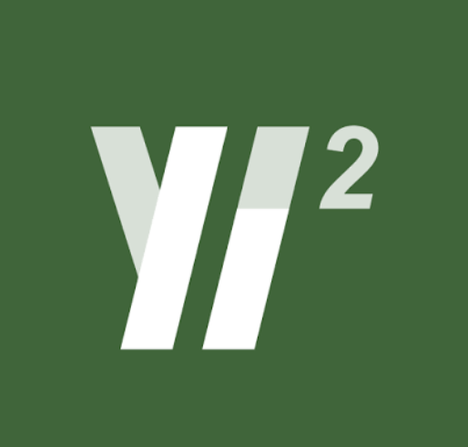
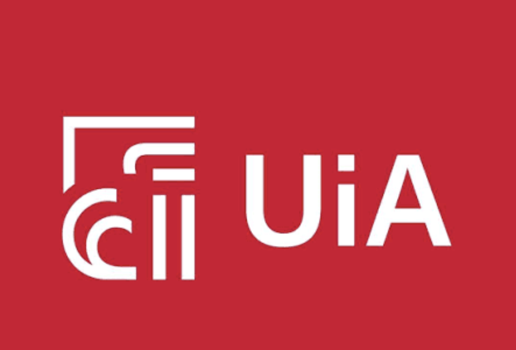

ID · 001 AktivFem utviklere. En komplett teknisk stack.
Penta står for de fem utviklerne i teamet. Stack representerer arkitekturen vi spesialiserer oss i, fra backend og infrastruktur til sikkerhet og AI.
01 / BAKGRUNN
En mangfoldig gruppe
Vi er fem IT studenter som fant sammen fordi vi delte de samme ambisjonene: å prestere godt faglig og bygge noe reelt sammen. Vi har hatt suksess i fag og prosjekter tidligere, og har gått fra klassekamerater med samme mål til støttende venner som presser hverandre videre.
02 / DRIV
Erfaring på siden
Vi bruker også tid ved siden av studiene til å aktivt bygge erfaring, både sammen og hver for oss. Noen eksempler: en av oss er Team Lead for systemutvikling hos Landmarker, tre er mentorer og læringsassistenter, og andre har vært arrangør for Techpoint Future, bygget nettside for en organisasjon eller jobbet som konsulent hos Yi2. Dette er bare et lite utvalg, hver av oss har mer på gang i bakgrunnen.
03 / MÅL
Våre ambisjoner
Vi ønsker å utvikle oss videre innen backend, sikkerhet og praktisk bruk av AI, og finne en oppdragsgiver vi kan skape reell verdi for, både for bedriften, for oss selv og for samfunnet.
Praksis & samarbeid
Hvor vi har fått erfaring
Bedrifter og organisasjoner vi har hatt praksis, jobb eller verv hos.







Akaranga
